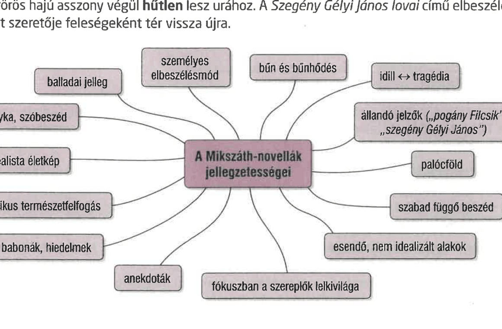

A mikszáthi novella jellegzetességei - A jó palócok
FELELETVÁZLAT
- Mikszáth Kálmán 19-20. századi szépprózája bővelkedik műfajokban: novella, novellafüzér, életkép, regény, karcolat, anekdota.
- A romantika irányzatából indulva jut el a realista ábrázolásmódon át a modern irodalomig.
- Szereplői között megtalálhatók a szétzüllő dzsentrik, a polgárosulatlan parasztok, valamint a zárt közösségek emberei.
- Az 1881-ben megjelent Tót atyafiak kötetet négy hosszabb elbeszélés alkotja, szereplői a zárkózott és mogorva tótok, a felvidéki szlovák népcsoport tagjai.
A jó palócok
- Az 1882-ben íródott kötet tizenöt novellája a palóc vidék hagyományaiban és kisparaszti világában gyökerezik.
- Több nézőpontú a korlátozott tudású elbeszélő miatt: a „mindentudó” elbeszélő által láttatott események egyszerre külsőek és bensőségesek.
- A szabad függő beszéd alkalmazása az elbeszélő és a szereplő nézőpontjának egymásra játszását eredményezi.
- A novellákat átszövi a babonák és hiedelmek világa.
- Az idilli felszín mögött gyakran sorstragédiák húzódnak meg.
- A helyszínek és szereplők újra és újra felbukkannak az elbeszélésekben, erősítve az egység érzetét.
- Visszatérő kérdések a bűn és bűnhődés, valamint a hűtlenség és annak következményei.
- Gyakoriak a párbeszédek, a közösségi szóbeszéd, az elhallgatás és a kihagyás, ezért sok novella balladás jellegű.
Timár Zsófi özvegysége
- A történetben Timár Zsófi elhagyja a férje, de az asszony hűtlensége ellenére is hozzá kötődik; a tragédia végül a férj halálába torkollik.
- A cím előrevetíti a befejezést: az örökös özvegységet.
- Az elbeszélő azonosul szereplőjével, és a történet balladai tömörséggel épül fel.
- A felszín idillje mögött mély megalázottságérzés és a hűtlenség fájdalma húzódik.
A bágyi csoda
- A középpontban a bágyi molnárné, Vér Klára fogadalma áll, amit a háborúba induló férjhez kapcsol.
- A cím előrevetíti a végkifejletet, egyszerre metaforikus és ironikus.
- A helyszín, a malom, egyszerre realista közeg és jelképes tér.
- A novellában fontos szerepet kap a bűn, a babonaság és a közösségi emlékezet.
